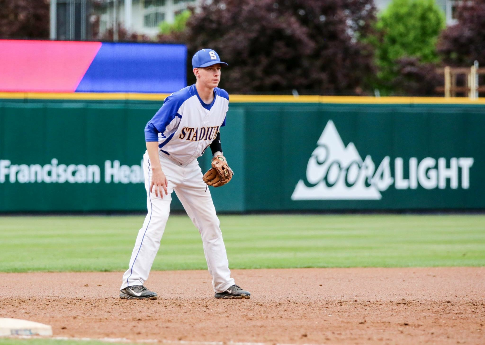

Hello , welcome to my webpage!
Hello, and welcome to my webpage! My name is Brendan Urban and I am a 24 year-old student at CodeFellows. Born in Southern California, I have lived in 3 different states, including California, Washington, and Montana. After graduating Stadium High School (Tacoma, Washington) in 2016, I moved to Bozeman, Montana to study Architecture at Montana State University. While in Montana, I began working as a Wildland Firefighter for the US Forestry Service, which I did for 4 years between Montana and Washington. I am currently a Manager for the sandwich company, Jimmy John's.